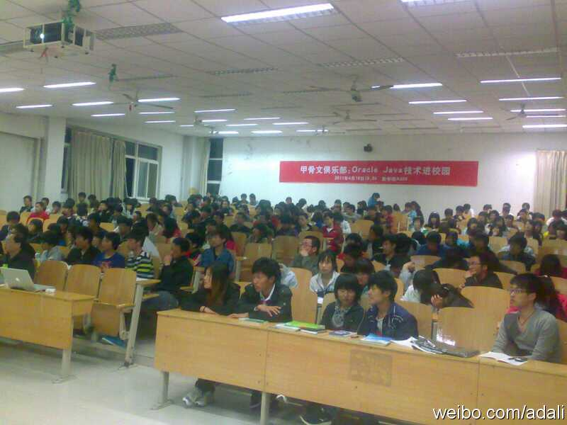

回复@BenjaminBa:恭喜！ //@BenjaminBa:多谢提供场地，和服务。 我们的project 赢得了iWeekendBJ的冠军。应该提你打一下广告。作为冠军项目我们用的是部署在Amazon AWS上web和Db服务器来实现的。web开发是通过java 数据库使用的是oracle ex免费版。
@Ada李力:
有一段时间没去做技术类演讲，来济南前猛啃了一段时间JAVAEE6的资料，搞得人很疲惫．到地方了才发现吃老本就行，听讲的学生不少还没学过JAVA，部分时间扫盲，部分时间答疑，山东商职的学生很热情 ，交流得不错．
- 